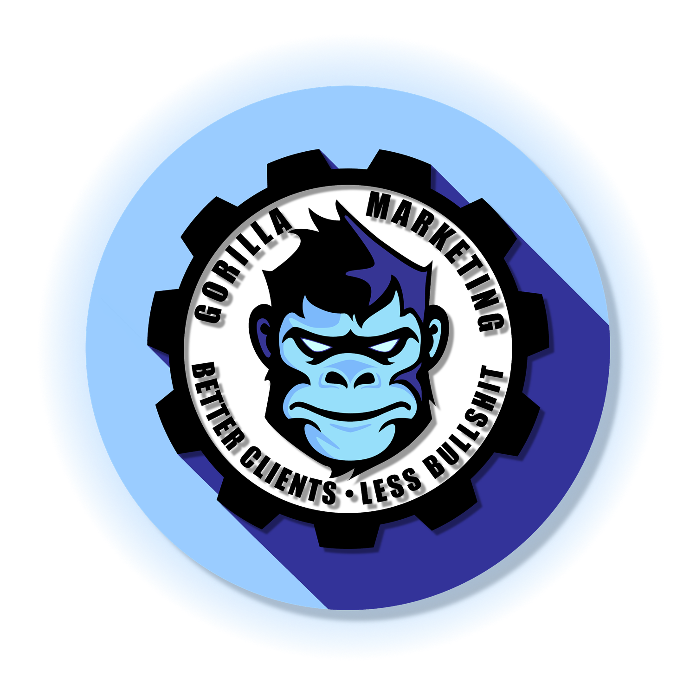
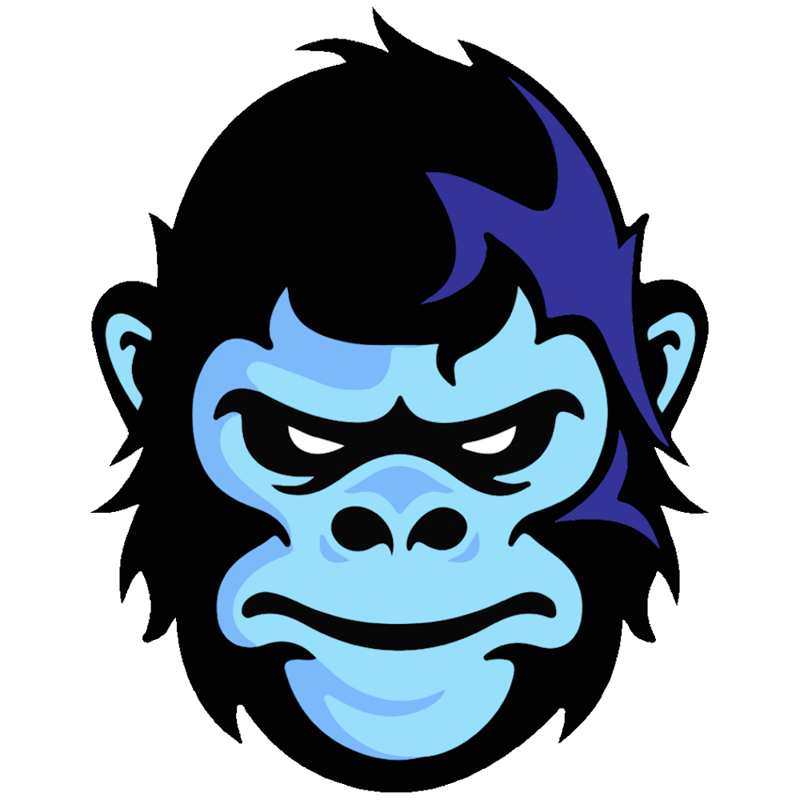
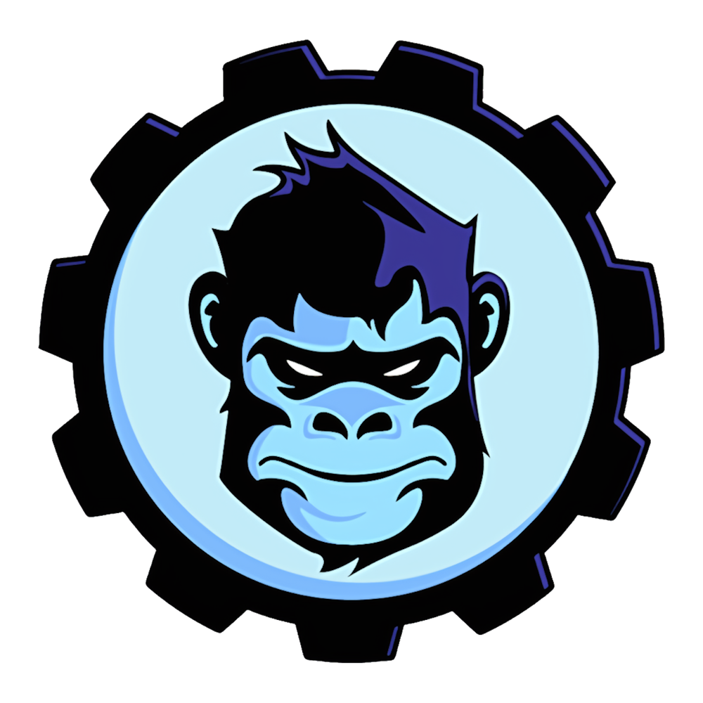
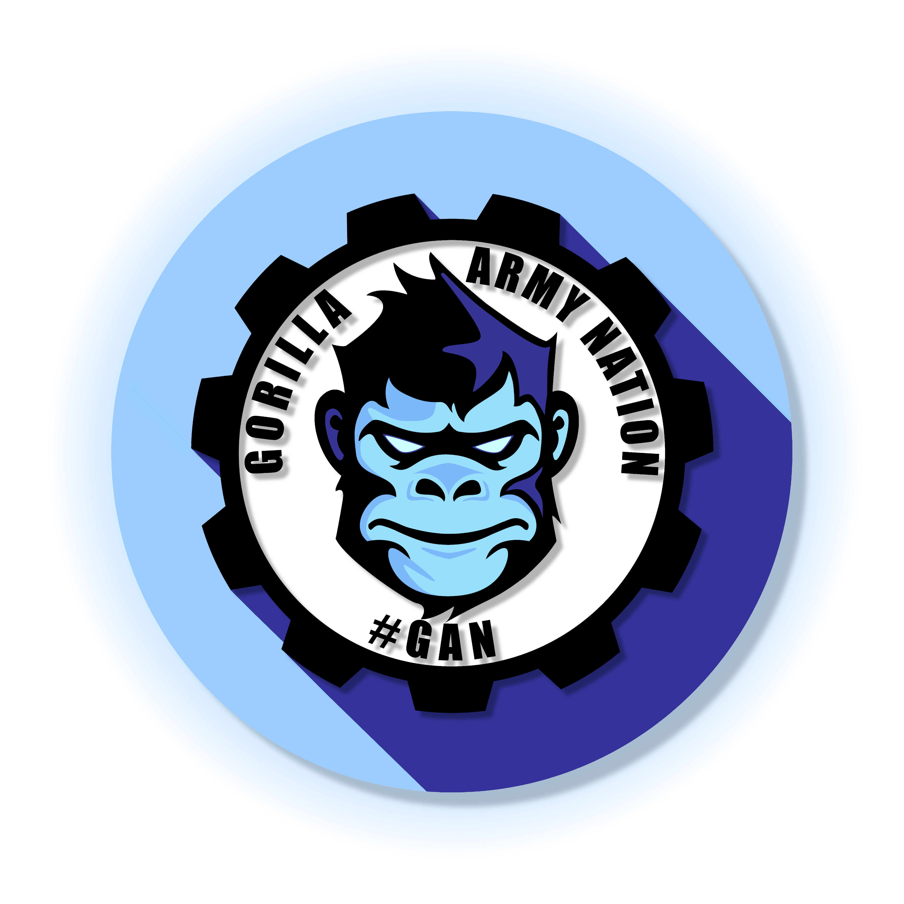
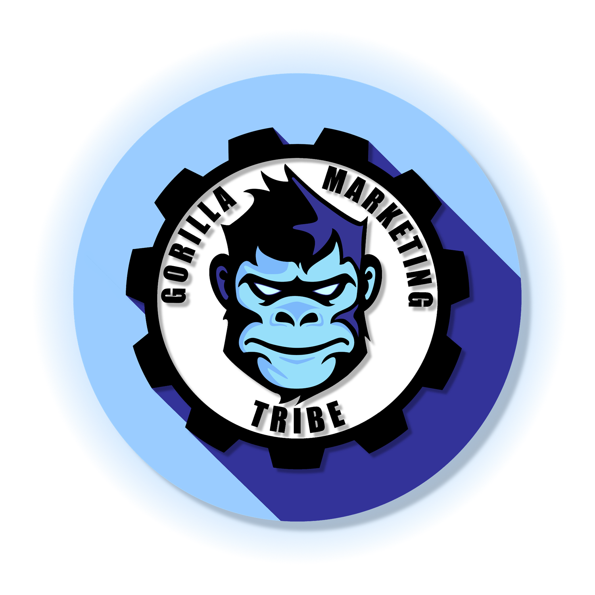
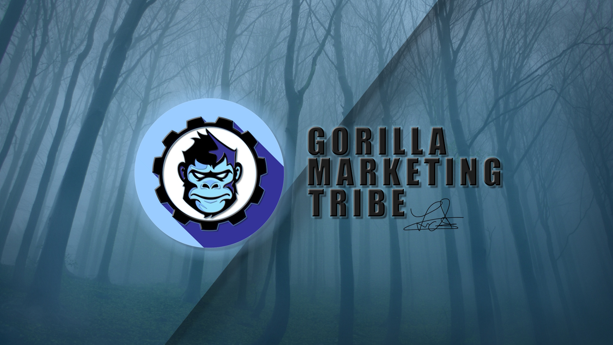

When the brand works too well.
Gorilla Marketing was a complete brand ecosystem built around a single founder's philosophy on unconventional social-media marketing. Scrappy. Fast. Effective. The kind of moves big brands with big budgets would never make because they were too busy being careful.
My role was bigger than logo work. I was hired to excavate an identity that was already half-formed — to find what was there, build a visual system worthy of it, and architect the community structure that would carry it.
What we built worked. Faster than anyone planned for. This is the case study of three-tier community growth, a content engine, and the cost of success nobody talks about until they've lived it.
The founder had built a private Facebook group around what he called "gorilla marketing" — a term he coined for his approach to social media. Unconventional. Scrappy. Effective. The kind of moves big brands with big budgets would never make because they were too busy being careful.
The group had just under 500 members when I joined. The founder and his small team ran it together. I paid attention. I took notes. And true to form, after about three months of absorbing everything I could, I started doing what I always do.
The founder noticed. What began as a mentor/student dynamic quickly evolved into something more like a genuine friendship and creative partnership. And somewhere in those early conversations, the question surfaced — what if this brand became more than a Facebook group?
The brand name wasn't mine to invent. "Gorilla" already existed — it was the founder's metaphor. His intellectual fingerprint on how he thought about marketing. Gorilla warfare. Move fast. Hit hard. Disappear before they know what happened. Repeat.
The original gorilla mark was a starting point. A foundation. It had the right instinct but not the full vision. So I went to work — and the decision that changed everything was the gear.


A gorilla alone is raw force. Intimidating, yes. But unpredictable. When you put that gorilla face inside a gear — suddenly you have something different entirely. Raw force, systematized. Power, made mechanical.
The whole brand promise in a single visual choice: we're not just going to hit hard. We're going to hit hard, on schedule, every time, like a machine.
The gorilla. The gear. The tagline. The palette. Every element saying the same thing. Built to work as a profile picture, a YouTube thumbnail, a t-shirt graphic, a community badge — everywhere a modern movement brand needs to live.
A mark with the right amount of attitude. Confident, not corporate. Edgy, not childish. Built to carry a community that was about to grow much faster than anyone planned for.
Once the visual identity was locked in, the conversation shifted to something bigger. Not a logo refresh — a complete brand ecosystem. A master brand, two community tiers, and a content engine that fed them both. A funnel disguised as a content library.



Watch a video. Discover Army Nation. Prove yourself. Graduate to the Tribe. A complete marketing funnel disguised as a content library. And it worked. Fast.
The YouTube channel had just crossed 10,000 subscribers. The whole team was on Zoom. The energy on that call was unlike anything I'd felt building something before — genuine shock. The kind of surprise that only comes when your work succeeds beyond what you dared to hope for.
I didn't know it at the time, but that call was both the high point and the turning point.
Here's what nobody tells you about building a community brand at speed: when it works, you can't step away from it.
Gorilla Marketing wasn't built around a product. It was built around people — the founder and his team. Their personalities. Their knowledge. Their energy. The community didn't just follow the brand. They followed them.
The success that came with 10,000+ Army Nation members, 3,000 Tribe members, and 100,000 YouTube subscribers didn't come with a manual on how to manage it. The audience demanded more — more content, more strategy, more access, more of them.
I stepped away from the project in 2019. I don't know the full details of what happened to the brand after that. What I do know is that the machine we built was powerful enough to outlast any single moment — and that's both the greatest testament to the work and the clearest illustration of its weight.
When brand identity, community architecture, and content strategy align behind a clear and authentic voice — the result isn't just growth. It's a movement. The numbers happened because we built something people genuinely wanted to be part of, and then gave them a visual language to claim it as their own.
Building fast feels like winning. And for a while, it is. But if the brand outpaces the capacity of the people running it — if there's no infrastructure to absorb the growth, no systems to distribute the responsibility — the success itself becomes the pressure that breaks things.
Gorilla Marketing wasn't a logo project. It was a brand ecosystem project — requiring identity work, community architecture, content strategy, and system-level thinking all at once. And the maturity to know what it cost.